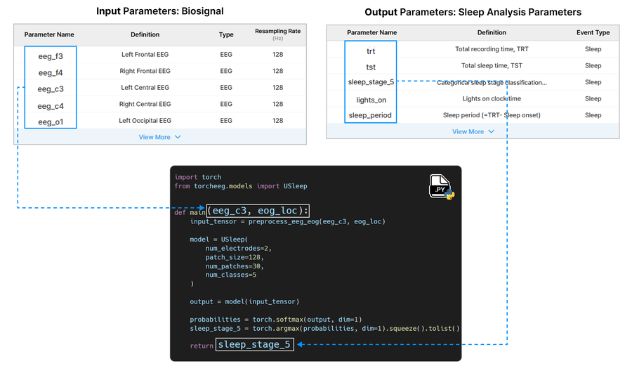
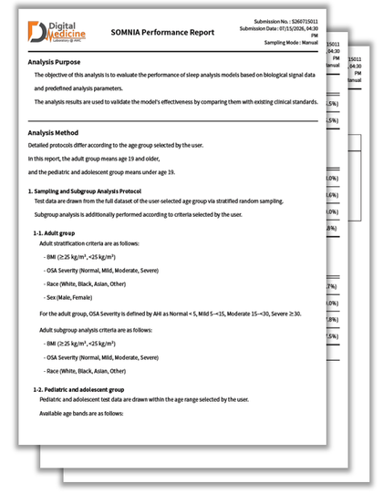

A database of nearly 30,000 PSG studies built by harmonizing biosignals and sleep analysis parameters, spanning public datasets and real-world clinical data.

SOMNIA evaluates sleep analysis algorithms using a curated multi-institutional PSG database and automatically generates nonclinical performance reports to support regulatory submissions.
A database of nearly 30,000 PSG studies built by harmonizing biosignals and sleep analysis parameters, spanning public datasets and real-world clinical data.

Simply define the required inputs and outputs in your code to submit your algorithm through the platform.

Then, review algorithm performance for the overall population and selected subgroups, with the results automatically compiled into a PDF report.
This work was supported by the Ministry of Food and Drug Safety, Republic of Korea (No. RS-2023-00215716).